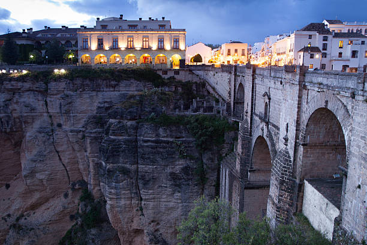

Explora los lugares y eventos que han dado forma a Ronda a lo largo de los siglos.
Ronda es famosa por su arquitectura monumental y paisajes inigualables. Cada rincón de la ciudad tiene una historia que contar, desde los tiempos de Al-Ándalus hasta su relevancia en la España moderna. Sumérgete en sus calles empedradas y descubre el encanto de Ronda.